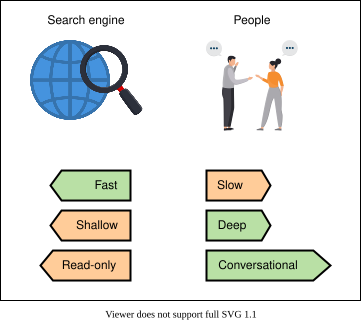
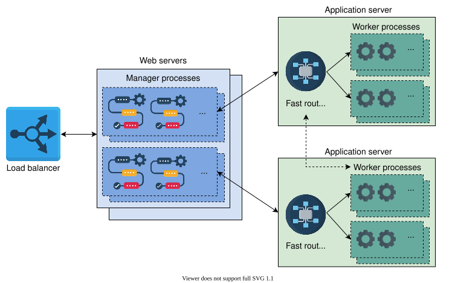
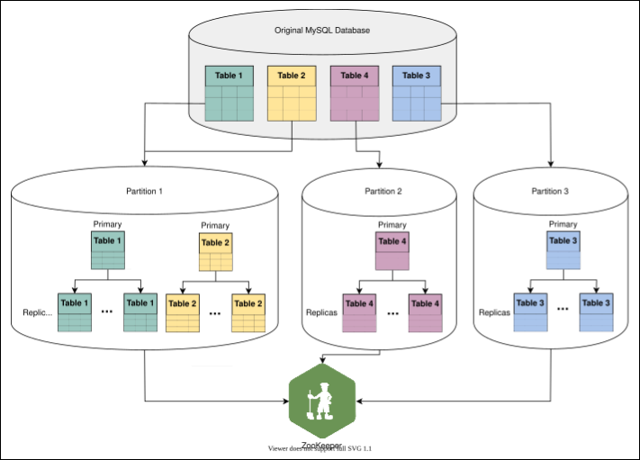
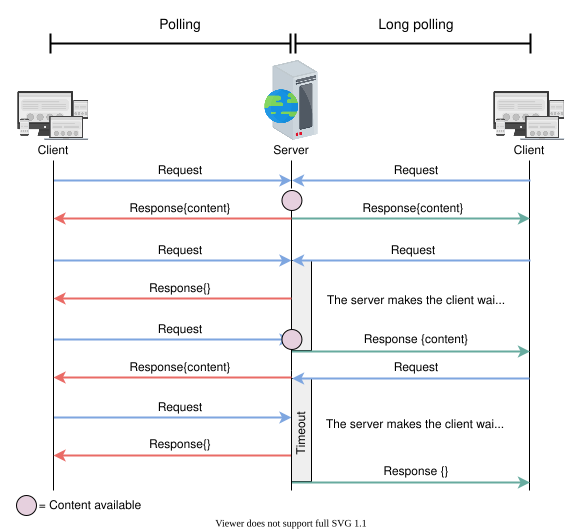
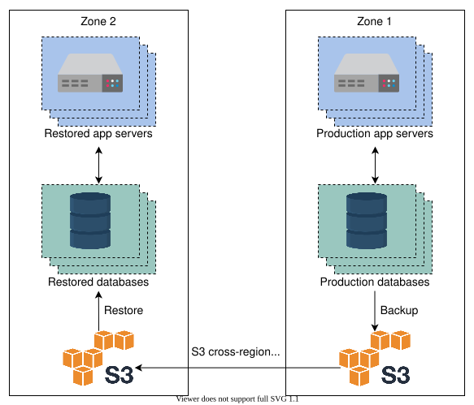

27. Design Quora
System Design: Quora
System Design: Quora
Learn about the basics of designing Quora.
We'll cover the following
Introduction#
With so much information available online, finding answers to questions can be daunting. That’s why information sharing online has become so widespread.. Search engines help us dig for information across the web. For example, Google’s search engine is intelligent enough to answer questions by extracting information from web pages. While search engines have their advantages, sometimes finding the information we want isn’t a straightforward process. Let’s look at the illustration below to understand how seeking information through search engines is different in comparison to people.

The illustration above depicts that information-seeking through other people can be more instructive, even if it comes at the cost of additional time. Seeking information through search engines can lead to dead ends because of content unavailability on a topic. Instead, we can ask questions of others.
What is Quora?#
Quora is a social question-and-answer service that allows users to ask questions to other users. Quora was created because of the issue that asking questions from search engines results in fast answers but shallow information. Instead, we can ask the general public, which feels more conversational and can result in deeper understanding, even if it’s slower. Quora enables anyone to ask questions, and anyone can reply. Furthermore, there are domain experts that have in-depth knowledge of a specific topic who occasionally share their expertise by answering questions.
The following plot shows global user search trends for the term “Quora” using Google:
More than 300 million monthly active users post thousands of questions daily related to more than 400,000 topics on Quora.
In this chapter, we’ll design Quora and evaluate how it fulfills the functional and non-functional requirements.
How will we design Quora?#
We'll design Quora by dividing the design problem into the following four lessons.
- Requirements: This lesson will focus on the functional and non-functional requirements for designing Quora. We’ll also estimate the resources required to design the system.
- Initial design: We’ll create an initial design that fulfills all the functional requirements for Quora and also formulate the API design in this lesson. Primarily, we’ll discuss the system’s building blocks, other components involved in completing the design, their integration, and workflow.
- Final design: In this lesson, we’ll start by identifying the limitations of the initial design. Then, we’ll update our final design to fulfill all the functional and non-functional requirements while addressing these limitations. We’ll also focus on some interesting aspects of our design, like vertical sharding of the database.
- Evaluation: We’ll assess our design specifically for non-functional requirements and discuss some of its trade-offs. We’ll also discuss some ideas on how we can improve the availability of our design in this lesson.
Note: The information provided in this chapter is inspired by the engineering blog of Quora.
Requirements of Quora's Design
Requirements of Quora's Design
Learn about the requirements for designing Quora.
Requirements#
Let’s understand the functional and non-functional requirements below:
Functional requirements#
A user should be able to perform the following functionalities:
- Questions and answers: Users can ask questions and give answers. Questions and answers can include images and videos.
- Upvote/downvote and comment: It is possible for users to upvote, downvote, and comment on answers.
- Search: Users should have a search feature to find questions already asked on the platform by other users.
- Recommendation system: A user can view their feed, which includes topics they’re interested in. The feed can also include questions that need answers or answers that interest the reader. The system should facilitate user discovery with a recommender system.
- Ranking answers: We enhance user experience by ranking answers according to their usefulness. The most helpful answer will be ranked highest and listed at the top.
Non-functional requirements#
- Scalability: The system should scale well as the number of features and users grow with time. It means that the performance and usability should not be impacted by an increasing number of users.
- Consistency: The design should ensure that different users’ views of the same content should be consistent. In particular, critical content like questions and answers should be the same for any collection of viewers. However, it is not necessary that all users of Quora see a newly posted question, answer, or comment right away.
- Availability: The system should have high availability. This applies to cases where servers receive a large number of concurrent requests.
- Performance: The system should provide a smooth experience to the user without a noticeable delay.
Resource estimation#
In this section, we’ll make an estimate about the resource requirements for Quora service. We’ll make assumptions to get a practical and tractable estimate. We’ll estimate the number of servers, the storage, and the bandwidth required to facilitate a large number of users.
Assumptions: It is important to base our estimation on some underlying assumptions. We, therefore, assume the following:
- There are a total of 1 billion users, out of which 300 million are daily active users.
- Assume 15% of questions have an image, and 5% of questions have a video embedded in them. A question cannot have both at the same time.
- We’ll assume an image is estimated to be 250 KBs, and a video is considered 5 MBs.
Number of servers estimation#
Let’s estimate our requests per second (RPS) for our design. If there are an average of 300 million daily active users and each user can generate 20 requests per day, then the total number of requests in a day will be:
300×106×20=6×109
Therefore, the RPS = 864006×109≈69500 approximately requests per second.
Estimating RPS
| Daily active users | 300 | million |
| Requests per day per user | 20 | |
| Requests Per Second (RPS) | f69444 |
We already established in the back-of-the-envelope calculations chapter that we’ll use the following formula to estimate a pragmatic number of servers:
RPS of a serverNumber of daily active users=8000300×106=37500
Therefore, the total number of servers required to facilitate 300 million users generating an average of 69,500 requests per second will be 37,500.
Storage estimation#
Let’s keep in mind our assumption that 15% of questions have images and 5% have videos. So, we’ll make the following assumptions to estimate the storage requirements for our design:
- Each of the 300 million active users posts 1 question in a day, and each question has 2 responses on average, 10 upvotes, and 5 comments in total.
- The collective storage required for the textual content of one question equals 1 KB.
Storage Requirements Estimation Calculator
| Questions per user | 1 | per day |
| Total questions per day | f300 | millions |
| Size of textual content per question | 1 | KB |
| Image size | 250 | KB |
| Video size | 5 | MB |
| Questions containing images | 15 | percent |
| Questions containing videos | 5 | percent |
| Storage for textual content | f0.3 | TB |
| Storage for image content | f11.25 | TB |
| Storage for video content | f75 | TB |
Total storage required for one day = 0.3TB+11.25TB+75TB =86.55TB per day
The daily storage requirements of Quora seem very high. But for service with 300 million DAU, a yearly requirement of 86.55TB×365=31.6PB is feasible. The practical requirement will be much higher because we have disregarded the storage required for a number of things. For example, non-active (out of 1B) users’ data will require storage.
Bandwidth estimation#
The bandwidth estimate requires the calculation of incoming and outgoing data through the network.
- Incoming traffic: The incoming traffic bandwidth required per day will be equal to 8640086.55TB×8=8Gbps
- Outgoing traffic: We have assumed that 300 million active users views 20 questions per day, so the total bandwidth requirements can be found in the below calculator:
Bandwidth Requirements Estimation Calculator
| Total storage required per day | 86.55 | TB |
| Incoming traffic bandwidth | f8 | Gbps |
| Questions viewed per user | 20 | per day |
| Total questions viewed | f69444 | per second |
| Bandwidth for text of all questions | f0.56 | Gbps |
| Bandwidth for 15% of image content | f20.83 | Gbps |
| Bandwidth for 5% of video content | f138.89 | Gbps |
| Outgoing traffic bandwidth | f160.3 | Gbps |
Total bandwidth requirement of Quora is equal to:
Incoming + outgoing traffic bandwidth =8Gbps+160.3Gbps=168.3Gbps
Building blocks we will use#
We’ll use the following building blocks for the initial design of Quora:
- Load balancers will be used to divide the traffic load among the service hosts.
- Databases are essential for storing all sorts of data, such as user questions and answers, comments, and likes and dislikes. Also, user data will be stored in the databases. We may use different types of databases to store different data.
- A distributed caching system will be used to store frequently accessed data. We can also use caching to store our view counters for different questions.
- The blob store will keep images and video files.
Initial Design of Quora
Initial Design of Quora
Transform the Quora requirements into a high-level design.
Initial design#
The initial design of Quora will be composed of the following building blocks and components:
- Web and application servers: A typical Quora page is generated by various services. The web and application servers maintain various processes to generate a webpage. The web servers have manager processes and the application servers have worker processes for handling various requests. The manager processes distribute work among the worker processes using a router library. The router library is enqueued with tasks by the manager processes and dequeued by worker processes. Each application server maintains several in-memory queues to handle different user requests. The following illustration provides an abstract view of web and application servers:

- Data stores: Different types of data require storage in different data stores. We can use critical data like questions, answers, comments, and upvotes/downvotes in a relational database like MySQL because it offers a higher degree of consistency. NoSQL databases like HBase can be used to store the number of views of a page, scores used to rank answers, and the extracted features from data to be used for recommendations later on. Because recomputing features is an expensive operation, HBase can be a good option to store and retrieve data at high bandwidth. We require high read/write throughput because big data processing systems use high parallelism to efficiently get the required statistics. Also, blob storage is required to store videos and images posted in questions and answers.
-
Distributed cache: For performance improvement, two distributed cache systems are used: Memcached and Redis. Memcached is primarily used to store frequently accessed critical data that is otherwise stored in MySQL. On the other hand, Redis is mainly used to store an online view counter of answers because it allows in-store increments. Therefore, two cache systems are employed according to their use case. Apart from these two, CDNs serve frequently accessed videos and images.
-
Compute servers: A set of compute servers are required to facilitate features like recommendations and ranking based on a set of attributes. These features can be computed in online or offline mode. The compute servers use machine learning (ML) technology to provide effective recommendations. Naturally, these compute servers have a substantially high amount of RAM and processing power.
Of course, other basic building blocks like load balancers, monitoring services, and rate limiters will also be part of the design. A high-level design is provided below:

Workflow#
The design of Quora is complex because we have a large number of functional and non-functional requirements. Therefore, we’ll explain the workflow on the basis of each feature:
- Posting question, answers, comments: The web servers receive user requests through the load balancer and direct them to the application servers. Meanwhile, the web servers generate part of the web page and let the worker process in the application servers do the rest of the page generation. The questions and answers data is stored in a MySQL database, whereas any videos and images are stored in the blob storage. A similar approach is used to post comments and upvote or downvote answers. Task prioritization is performed by employing different queues for different tasks. We perform prioritization because certain tasks require immediate attention—for example, fetching data from the database for a user request—while others are not so urgent—for example, sending a weekly email digest. The worker processes will perform tasks by fetching from these queues.
Points to Ponder
Question 1
When would a service like Quora require a notifications feature?
1 of 2
-
Answer ranking system: Answers to questions can be sorted based on date. Although it is convenient to develop a ranking system on the basis of date (using time stamps), users prefer to see the most appropriate answer at the top. Therefore, Quora uses ML to rank answers. Different features are extracted over time and stored in the HBase for each type of question. These features are forwarded to the ML engine to rank the most useful answer at the top. We cannot use the number of upvotes as the only metric for ranking answers because a good number of answers can be jokes—and such answers also get a lot of upvotes. It is good to implement the ranking system offline because good answers get upvotes and views over time. Also, the offline mode poses a lesser burden on the infrastructure. Implementing the ranking system offline and the need for special ML hardware makes it suitable to use some public cloud elastic services.
-
Recommendation system: The recommendation system is responsible for several features. For example, we might need to develop a user feed, find related questions and ads, recommend questions to potential respondents, and even highlight duplicate content and content in violation of the service’s terms of use. Unlike the answer ranking system, the recommendation system must provide both online and offline services. This system receives requests from the application server and forwards selected features to the ML engine.
-
Search feature: Over time, as questions and answers are fed to the Quora system, it is possible to build an index in the HBase. User search queries are matched against the index, and related content is suggested to the user. Frequently accessed indexes can be served from cache for low latency. The index can be constructed from questions, answers, topics labels, and usernames. Tokenization of the search index returns the same results for reordered words also (see Scaling Search and Indexing in Distributed Search chapter for more details).
API design#
We’ll design the API calls for Quora in this section. We’ll define APIs for the following features only:
- Post a question
- Post an answer
- Upvote or downvote a question or answer
- Comment on an answer
- Search
Note: We don’t consider APIs for a recommendation system or ranking because they are not placed as an explicit request by the user. Instead, the web server coordinates with other components to ensure the service.
Post a question#
The POST method of HTTP is used to call the /postQuestion API:
postQuestion(user_id, question, description, topic_label, video, image)
Let’s understand each parameter of the API call:
Parameter | Description |
| This is the unique identification of the user that posts the question. |
| This is the text of the question posed by the user. |
| This is the description of a question. This is an optional field. |
| This represents a list of domains to which the user’s question is related. |
| This is a video file embedded in a user question. |
| This is an image that is a part of a user question. |
The video and image parameters can be NULL if no image or video is embedded within the question. Otherwise, it is uploaded as part of the question.
Post an answer#
For posting an answer, the POST method is a suitable choice for /postAnswer API:
postAnswer(user_id, question_id, answer_text, video, image)
Parameter | Description |
| This refers to the question the answer is posted against. |
| This is the textual answer posted by the responder. |
The rest of the parameters are self-explanatory.
Upvote an answer#
The /upvote API is below:
upvote(user_id, question_id, answer_id)
Parameter | Description |
| This represents the user upvoting the answer. |
| This represents the identity of the answer that is upvoted for a particular question, which is identified by the |
Note: The downvote API is the same as the upvote API because both are similar functionalities.
Comment on an answer#
The /comment API has the following structure:
comment(user_id, answer_id, comment_text)
Parameter | Description |
| It represents the user commenting on the answer. |
| It represents the text a user posts against an answer identified by the |
Parameter | Description |
| This is the |
| This is the search query entered by a user. |
We use a sequencer to generate the different IDs mentioned in the API calls.
Point to Ponder
Question
Why is there a custom routing layer between the web and application servers instead of a load-balancing layer?
Final Design of Quora
Final Design of Quora
Learn about the limitations of Quora's design and improve the design.
Limitations of the proposed design#
The proposed design serves all the functional requirements. However, it has a number of serious drawbacks that emerge as we scale. This means that we are unable to fulfill the non-functional requirements. Let’s explore the main shortcomings below:
-
Limitations of web and application servers: To entertain the user’s request, payloads are transferred between web and application servers, which increases latency because of network I/O between these two types of servers. Even if we achieve parallel computation by separating the web from application servers (that is, the manager and worker processes), the added latency due to an additional network link erodes a user’s experience. Apart from data transfer, control communication between the router library with manager and worker processes also imposes additional performance penalties.
-
In-memory queue failure: The internal architecture of application servers log tasks and forward them to the in-memory queues, which serve them to the workers. These in-memory queues of different priorities can be subject to failures. For instance, if a queue gets lost, all the tasks in that queue are lost as well, and manual engineering is required to recover those tasks. This greatly reduces the performance of the system. On the other hand, replicating these queues requires increasing RAM size. Also, with the number of features (functional requirements) that our system offers, many tasks can get assembled, which results in insufficient memory. At the same time, it is not desirable to choke application servers with not-so-urgent tasks. For example, application servers should not be burdened with tasks like storing view counts for answers, adding statistics to the database for later analysis, and so on.
-
Increasing QPS on MySQL: Because we have a higher number of features offered by our system, few MySQL tables receive a lot of user queries. This results in a higher number of QPS on certain MySQL servers, which can result in higher latency. Furthermore, there is no scheme defined for disaster recovery management in our design.
-
Latency of HBase: Even though HBase allows high real-time throughput, its P99 latency is not among the best. A number of Quora features require the ML engine that has a latency of its own. Due to the addition of the higher latency of HBase, the overall performance of the system degrades over time.
The issues highlighted above require changes to the earlier proposed design. Therefore, we’ll make the following adjustments and update our design:

Detailed design of Quora#
Let’s understand the improvements in our design:
Service hosts#
We combine the web and application servers within a single powerful machine that can handle all the processes at once. This technique eliminates the network I/O and the latency introduced due to the network hops required between the manager, worker, and routing library processes. The illustration below provides an abstract view of the updated web server architecture:

Vertical sharding of MySQL#
Tables in the MySQL server are converted to separate shards that we refer to as partitions. A partition has a single primary server and multiple replica servers.
The goal is to improve performance and reduce the load due to an increasing number of queries on a single database table. To achieve that, we do vertical sharding in two ways:
- We split tables of a single database into multiple partitions. The concept is depicted in Partitions 2 and 3, which embed Tables 4 and 3, respectively.
- We combine multiple tables into a single partition, where
joinoperations are anticipated. The concept is depicted in Partition 1, which embeds Tables 1 and 2.
Therefore, we are able to co-locate related data and reduce traffic on hot data. The illustration below depicts vertical sharding at Quora.

After we complete the partitioning, we require two types of mappings or metadata to complete our scaling process:
- Which partitions contain which tables and columns?
- Which hosts are primary and replicas of a particular partition?
Both of these mappings are maintained by a service like ZooKeeper.
The sharded design above ensures scalability because we are able to locate related data in a single partition, and therefore it eliminates the need for querying data from multiple shards. Also, the number of read-replicas can be increased for hot shards, or further sharding may be performed. For edge cases where joining may be needed, we can perform it at the application level.
Note: Vertical sharding is of particular interest in Quora’s design because horizontal sharding is more common in the database community. The main idea behind vertical sharding is to achieve scalability by carefully dividing or re-locating tables and eliminating join operations across different shards. Nevertheless, a vertically sharded partition or table can grow horizontally to an extent where horizontal sharding will be necessary to retain acceptable performance.
MyRocks#
The new design embeds MyRocks as the key-value store instead of HBase. We use the MyRocks version of RocksDB for two main reasons:
- MyRocks has a lower p99 latency instead of HBase. Quora claims to have reduced P99 latency from 80 ms to 4 ms using MyRocks.
- There are operational tools that can transfer data between MyRocks and MySQL.
Note: Quora serves the ML compute engine by extracting features from questions and answers stored in MySQL. In this case, the operational tools come in handy to transfer data between MyRocks and MySQL.
Kafka#
Our updated design reduces the request load on service hosts by separating not-so-urgent tasks from the regular API calls. For this purpose, we use Kafka, which can disseminate jobs among various queues for tasks such as the view counter (see Sharded Counters), notification system, analytics, and highlight topics to the user. Each of these jobs is executed through cron jobs.
Technology usage#
Services that scale quickly have little time to develop new features and handle an increasing number of requests from users. Such services employ cloud infrastructure to handle spikes in traffic. Also, the choice of programming language is important. Just like we mentioned that YouTube chose Python for faster programming, we can apply the same logic to Quora. In fact, Quora uses the Python Paste web framework.
It is desirable to use a faster programming language like C++ to develop the feature extraction service. For online recommendation services through a ML engine, feature extraction service should be quick, to enable the ML engine to accomplish accurate recommendations. Not only that, but reducing the latency burden on the ML engine allows it to provide a larger set of services. We can employ the Thrift service to support interoperability between programming languages within different components.
Features like comments, upvotes, and downvotes require frequent page updates from the client side. Polling is a technique where the client (browser) frequently requests the server for new updates. The server may or may not have any updates but still responds to the client. Therefore, the server may get uselessly overburdened. To resolve this issue, Quora uses a technique called long polling, where if a client requests for an update, the server may not respond for as long as 60 seconds if there are no updates. However, if there is an update, the server will reply immediately and allow the client to make new requests.

Lastly, Memcached can employ multiget() to obtain multiple keys from the cache shards to reduce the retrieval latency of multiple keys.
Note: Quora has employed AWS to set up a good number of its infrastructure elements, including S3 (see the Blob Storage chapter) and Redshift storage.
Quiz
Question 1
What would be considered a good approach for communication between different manager and worker processes within the service hosts?
1 of 3
Evaluation of Quora’s Design
Evaluation of Quora’s Design
Learn how the proposed design fulfills the non-functional requirements.
We'll cover the following
Fulfilling requirements#
We have used various techniques to fulfill our functional requirements. However, we need to determin if we have fulfilled the non-functional requirements. We’ll highlight some of the mechanisms we have utilized to address the non-functional requirements:
-
Scalability: Our system is highly scalable for several reasons. The updated design uses powerful and homogeneous service hosts. Quora uses powerful machines because service hosts use an in-memory cache, some level of queueing, maintain manager, worker, and routing library. The horizontal scaling of these service hosts is convenient because they are homogeneous.
On the database end, our design shards the MySQL databases vertically, which avoids issues in scalability because of overloaded MySQL servers. To reduce complex
joinqueries, tables anticipatingjoinoperations are placed in the same shard or partition.Note: As mentioned earlier, vertical sharding may not be enough because each shard can grow large horizontally. For large MySQL tables, writing becomes a bottleneck. Therefore, our design may have to adhere to horizontal sharding, a well-known practice in database scaling.
-
Consistency: Due to the variety of functionalities offered by Quora, different consistency schemes may be selected for different types of data. For example, certain critical data like questions and answers should be stored synchronously. In this case, performance can take a hit because users don’t expect instantaneous responses to their questions. It means that a user may get a reply in five minutes, one hour, one day, or no response at all, depending on the user’s question and the availability of would-be respondents.
Other data like view counts may not necessarily be stored synchronously because it is not a goal of the Quora service to ensure that all users see the same number of views as soon as the question is posted. For such cases, eventual consistency is favored for improved performance.
Note: In general, our design is equipped with strong techniques to reduce the user-perceived latency as a whole.
-
Availability: Some of the main ideas to improve availability include isolation between different components, keeping redundant instances, using CDN, using configuration services like ZooKeeper, and load balancers to hide failures from users.
Our design, however, lacks any disaster recovery management, which we’ll explore in the next section.
-
Performance: This design has a strong performance because we have employed the right technology for the right feature. For example, we have used several datastores for different reasons. On top of that, we used different distributed caches depending upon the use case and access frequency. Also, we employed Kafka to queue similar tasks and assign them to cron jobs that otherwise take a long time if executed via API calls.
Note: Quora claims that using its custom queuing solution, it can handle roughly 15,000 tasks per second.
Requirements | Techniques |
Scalability |
|
Consistency |
|
Availability |
|
Performance |
|
Disaster recovery#
Our proposed and detailed design does not cater to the situation of natural disasters. While we have met other non-functional requirements, durability, fault-tolerance, and availability are incomplete without a disaster recovery management plan. This section will explore some mechanisms that provide resilience against disasters.
The first and foremost approach of handling a disaster is frequent backups. The frequency of backups depends on the size of the data. Daily backups are suitable for our design because we can backup individual data stores and shards without any hassle. Of course, backups will be stored at remote destinations because natural disasters can wipe out the entire facility at a location.
Note: Taking regular backup at remote locations is not enough. Quick restoration of backed-up data in a timely manner completes a disaster recovery plan.
The following are important questions for designing a disaster recovery plan:
- What data and systems are considered critical to recover from disasters?
- How fast is the restoration from the backup facility?
- Can all systems be recovered through backups?
- How can we deal with potential loss of data that we couldn’t replicate before the disaster hit?
The illustration below shows a simple architecture of how a disaster recovery scheme works:

The approach is fairly straightforward. The data, application servers, and configurations are backed up in the Amazon S3 storage service in the same zone. Zonal replication between S3 storage facilitates transfer to another zone. Later, the application and database servers can be restored from the S3 storage in another zone.
The restoration strategy is simple and effective but it has a couple of drawbacks:
- We might lose some data that is not backed up since we take backups on a daily basis. However, this issue can be mitigated if we do synchronous replication across regions.
- Restoration can take a long time (a few hours), and most databases do not serve queries while data is being recovered.
Note: In general, Amazon provides service with high reliability and availability. For instance, S3 service reports 99.999999999% durability and 99.9% availability over a year.
Conclusion#
Throughout this design, we learned how Quora is able to scale its services as the number of users increases. One interesting aspect of the design includes the vertical sharding of the MySQL database. Apart from that, the Quora design discusses a variety of techniques to meet the functional and non-functional requirements. However, our scope did not include the usage of techniques like natural language processing (NLP) to remove spelling mistakes in user’s questions or typeahead services during the search.
Point to Ponder
Question
How can using different data stores for different types of data be beneficial in disaster recovery?